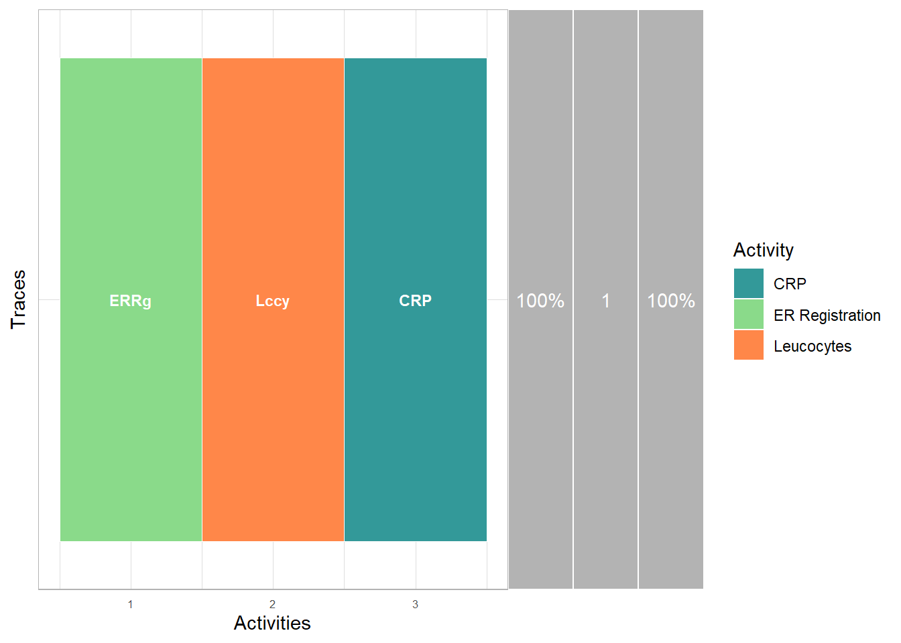

Generic filtering

library(bupaR)filter
Generic filtering of events can be done using the filter
function, which takes an event log and any number of logical conditions.
The example below filters events which have vehicleclas “C” and amount
greater than 300. More process-specific filtering methods can be found
here.
traffic_fines %>%
filter(vehicleclass == "C", amount > 300)## # Log of 17 events consisting of:
## 1 trace
## 17 cases
## 17 instances of 1 activity
## 9 resources
## Events occurred from 2006-08-10 until 2008-02-09
##
## # Variables were mapped as follows:
## Case identifier: case_id
## Activity identifier: activity
## Resource identifier: resource
## Activity instance identifier: activity_instance_id
## Timestamp: timestamp
## Lifecycle transition: lifecycle
##
## # A tibble: 17 × 18
## case_id activity lifec…¹ resou…² timestamp amount article dismi…³
## <chr> <fct> <fct> <fct> <dttm> <chr> <dbl> <chr>
## 1 A10060 Create Fi… comple… 541 2007-03-08 00:00:00 36.0 157 NIL
## 2 A10497 Create Fi… comple… 558 2007-03-30 00:00:00 36.0 157 NIL
## 3 A10818 Create Fi… comple… 561 2007-04-08 00:00:00 36.0 157 NIL
## 4 A11707 Create Fi… comple… 550 2007-04-24 00:00:00 36.0 157 NIL
## 5 A1408 Create Fi… comple… 559 2006-08-20 00:00:00 35.0 157 NIL
## 6 A14883 Create Fi… comple… 561 2007-06-29 00:00:00 36.0 157 NIL
## 7 A17130 Create Fi… comple… 541 2007-07-15 00:00:00 36.0 157 NIL
## 8 A1815 Create Fi… comple… 563 2006-08-10 00:00:00 35.0 157 NIL
## 9 A19109 Create Fi… comple… 556 2007-07-17 00:00:00 36.0 157 NIL
## 10 A23000 Create Fi… comple… 550 2007-12-29 00:00:00 36.0 157 NIL
## 11 A24247 Create Fi… comple… 561 2007-12-03 00:00:00 36.0 157 NIL
## 12 A24366 Create Fi… comple… 541 2008-02-09 00:00:00 36.0 157 NIL
## 13 A24634 Create Fi… comple… 537 2007-11-21 00:00:00 36.0 157 NIL
## 14 A24942 Create Fi… comple… 561 2007-12-30 00:00:00 36.0 157 NIL
## 15 A25581 Create Fi… comple… 559 2007-11-23 00:00:00 36.0 157 NIL
## 16 A26099 Create Fi… comple… 559 2007-12-09 00:00:00 36.0 157 NIL
## 17 A26277 Create Fi… comple… 538 2008-01-07 00:00:00 36.0 157 NIL
## # … with 10 more variables: expense <chr>, lastsent <chr>, matricola <dbl>,
## # notificationtype <chr>, paymentamount <dbl>, points <dbl>,
## # totalpaymentamount <chr>, vehicleclass <chr>, activity_instance_id <chr>,
## # .order <int>, and abbreviated variable names ¹lifecycle, ²resource,
## # ³dismissalslice
An eventlog can be sliced, which mean returning a slice, i.e. a subset, from the eventlog, based on row number. There are three ways to slice event logs
- Using
slice: take a slice of cases - Using
slice_activities: take a slice of activity instances - Using
slice_events: take a slice of events
The next piece of code returns the first 10 cases. Note that first here is defined by the current order of the data set, not by time.
patients %>%
slice(1:10)## # Log of 110 events consisting of:
## 2 traces
## 10 cases
## 55 instances of 7 activities
## 7 resources
## Events occurred from 2017-01-02 11:41:53 until 2017-01-11 11:39:30
##
## # Variables were mapped as follows:
## Case identifier: patient
## Activity identifier: handling
## Resource identifier: employee
## Activity instance identifier: handling_id
## Timestamp: time
## Lifecycle transition: registration_type
##
## # A tibble: 110 × 7
## handling patient employee handling_id regist…¹ time .order
## <fct> <chr> <fct> <chr> <fct> <dttm> <int>
## 1 Registration 1 r1 1 start 2017-01-02 11:41:53 1
## 2 Registration 2 r1 2 start 2017-01-02 11:41:53 2
## 3 Registration 3 r1 3 start 2017-01-04 01:34:05 3
## 4 Registration 4 r1 4 start 2017-01-04 01:34:04 4
## 5 Registration 5 r1 5 start 2017-01-04 16:07:47 5
## 6 Registration 6 r1 6 start 2017-01-04 16:07:47 6
## 7 Registration 7 r1 7 start 2017-01-05 04:56:11 7
## 8 Registration 8 r1 8 start 2017-01-05 04:56:11 8
## 9 Registration 9 r1 9 start 2017-01-06 05:58:54 9
## 10 Registration 10 r1 10 start 2017-01-06 05:58:54 10
## # … with 100 more rows, and abbreviated variable name ¹registration_typeslice_activities
The next piece of code returns the first 10 activity instances.
patients %>%
slice_activities(1:10)## # Log of 20 events consisting of:
## 1 trace
## 10 cases
## 10 instances of 1 activity
## 1 resource
## Events occurred from 2017-01-02 11:41:53 until 2017-01-06 09:13:28
##
## # Variables were mapped as follows:
## Case identifier: patient
## Activity identifier: handling
## Resource identifier: employee
## Activity instance identifier: handling_id
## Timestamp: time
## Lifecycle transition: registration_type
##
## # A tibble: 20 × 7
## handling patient employee handling_id regist…¹ time .order
## <fct> <chr> <fct> <chr> <fct> <dttm> <int>
## 1 Registration 1 r1 1 start 2017-01-02 11:41:53 1
## 2 Registration 2 r1 2 start 2017-01-02 11:41:53 2
## 3 Registration 3 r1 3 start 2017-01-04 01:34:05 3
## 4 Registration 4 r1 4 start 2017-01-04 01:34:04 4
## 5 Registration 5 r1 5 start 2017-01-04 16:07:47 5
## 6 Registration 6 r1 6 start 2017-01-04 16:07:47 6
## 7 Registration 7 r1 7 start 2017-01-05 04:56:11 7
## 8 Registration 8 r1 8 start 2017-01-05 04:56:11 8
## 9 Registration 9 r1 9 start 2017-01-06 05:58:54 9
## 10 Registration 10 r1 10 start 2017-01-06 05:58:54 10
## 11 Registration 1 r1 1 complete 2017-01-02 12:40:20 11
## 12 Registration 2 r1 2 complete 2017-01-02 15:16:38 12
## 13 Registration 3 r1 3 complete 2017-01-04 06:36:54 13
## 14 Registration 4 r1 4 complete 2017-01-04 04:25:06 14
## 15 Registration 5 r1 5 complete 2017-01-04 20:07:50 15
## 16 Registration 6 r1 6 complete 2017-01-04 18:12:46 16
## 17 Registration 7 r1 7 complete 2017-01-05 06:27:49 17
## 18 Registration 8 r1 8 complete 2017-01-05 07:58:17 18
## 19 Registration 9 r1 9 complete 2017-01-06 07:18:32 19
## 20 Registration 10 r1 10 complete 2017-01-06 09:13:28 20
## # … with abbreviated variable name ¹registration_typeslice_events
The next piece of code returns the first 10 events.
patients %>%
slice_events(1:10)## # Log of 10 events consisting of:
## 1 trace
## 10 cases
## 10 instances of 1 activity
## 1 resource
## Events occurred from 2017-01-02 11:41:53 until 2017-01-06 05:58:54
##
## # Variables were mapped as follows:
## Case identifier: patient
## Activity identifier: handling
## Resource identifier: employee
## Activity instance identifier: handling_id
## Timestamp: time
## Lifecycle transition: registration_type
##
## # A tibble: 10 × 7
## handling patient employee handling_id regist…¹ time .order
## <fct> <chr> <fct> <chr> <fct> <dttm> <int>
## 1 Registration 1 r1 1 start 2017-01-02 11:41:53 1
## 2 Registration 2 r1 2 start 2017-01-02 11:41:53 2
## 3 Registration 3 r1 3 start 2017-01-04 01:34:05 3
## 4 Registration 4 r1 4 start 2017-01-04 01:34:04 4
## 5 Registration 5 r1 5 start 2017-01-04 16:07:47 5
## 6 Registration 6 r1 6 start 2017-01-04 16:07:47 6
## 7 Registration 7 r1 7 start 2017-01-05 04:56:11 7
## 8 Registration 8 r1 8 start 2017-01-05 04:56:11 8
## 9 Registration 9 r1 9 start 2017-01-06 05:58:54 9
## 10 Registration 10 r1 10 start 2017-01-06 05:58:54 10
## # … with abbreviated variable name ¹registration_typefirst_n, last_n
The slice function select events, cases or activity instances based
on their current position in the event data. As such, the result can be
changed using the arrange function. More often, we want to
select the first n activity instances, or the last ones. This
is achieved with the first_n or last_n
functions, which return the first, resp. last, n activity instances of a
log based on time, not on position.
patients %>%
first_n(n = 5)## # Log of 10 events consisting of:
## 2 traces
## 3 cases
## 5 instances of 2 activities
## 2 resources
## Events occurred from 2017-01-02 11:41:53 until 2017-01-04 04:25:06
##
## # Variables were mapped as follows:
## Case identifier: patient
## Activity identifier: handling
## Resource identifier: employee
## Activity instance identifier: handling_id
## Timestamp: time
## Lifecycle transition: registration_type
##
## # A tibble: 10 × 7
## handling patient emplo…¹ handl…² regis…³ time .order
## <fct> <chr> <fct> <chr> <fct> <dttm> <int>
## 1 Registration 1 r1 1 start 2017-01-02 11:41:53 1
## 2 Registration 2 r1 2 start 2017-01-02 11:41:53 2
## 3 Triage and Assess… 1 r2 501 start 2017-01-02 12:40:20 4
## 4 Registration 1 r1 1 comple… 2017-01-02 12:40:20 6
## 5 Registration 2 r1 2 comple… 2017-01-02 15:16:38 7
## 6 Triage and Assess… 2 r2 502 start 2017-01-02 22:32:25 5
## 7 Triage and Assess… 1 r2 501 comple… 2017-01-02 22:32:25 9
## 8 Triage and Assess… 2 r2 502 comple… 2017-01-03 12:34:01 10
## 9 Registration 4 r1 4 start 2017-01-04 01:34:04 3
## 10 Registration 4 r1 4 comple… 2017-01-04 04:25:06 8
## # … with abbreviated variable names ¹employee, ²handling_id, ³registration_typeThis is not impacted by a different ordering of the data since it will take the time aspect into account.
patients %>%
arrange(desc(time)) %>%
first_n(n = 5)## # Log of 10 events consisting of:
## 2 traces
## 3 cases
## 5 instances of 2 activities
## 2 resources
## Events occurred from 2017-01-02 11:41:53 until 2017-01-04 04:25:06
##
## # Variables were mapped as follows:
## Case identifier: patient
## Activity identifier: handling
## Resource identifier: employee
## Activity instance identifier: handling_id
## Timestamp: time
## Lifecycle transition: registration_type
##
## # A tibble: 10 × 7
## handling patient emplo…¹ handl…² regis…³ time .order
## <fct> <chr> <fct> <chr> <fct> <dttm> <int>
## 1 Registration 1 r1 1 start 2017-01-02 11:41:53 1
## 2 Registration 2 r1 2 start 2017-01-02 11:41:53 2
## 3 Triage and Assess… 1 r2 501 start 2017-01-02 12:40:20 4
## 4 Registration 1 r1 1 comple… 2017-01-02 12:40:20 6
## 5 Registration 2 r1 2 comple… 2017-01-02 15:16:38 7
## 6 Triage and Assess… 2 r2 502 start 2017-01-02 22:32:25 5
## 7 Triage and Assess… 1 r2 501 comple… 2017-01-02 22:32:25 9
## 8 Triage and Assess… 2 r2 502 comple… 2017-01-03 12:34:01 10
## 9 Registration 4 r1 4 start 2017-01-04 01:34:04 3
## 10 Registration 4 r1 4 comple… 2017-01-04 04:25:06 8
## # … with abbreviated variable names ¹employee, ²handling_id, ³registration_typeIncombination with group_by_case, it is very easy to
select the heads or tails of each case. Below, we explore the 95% most
common first 3 activities in the sepsis log.
sepsis %>%
group_by_case() %>%
first_n(3) %>%
trace_explorer(coverage = 0.95)
sample_n
The sample_n function allows to take a sample of the
event log containing n cases. The code below returns a sample of 10
patients.
patients %>%
sample_n(size = 10)## # Log of 104 events consisting of:
## 3 traces
## 10 cases
## 52 instances of 7 activities
## 7 resources
## Events occurred from 2017-03-30 13:32:50 until 2018-05-05 07:16:02
##
## # Variables were mapped as follows:
## Case identifier: patient
## Activity identifier: handling
## Resource identifier: employee
## Activity instance identifier: handling_id
## Timestamp: time
## Lifecycle transition: registration_type
##
## # A tibble: 104 × 7
## handling patient employee handling_id regist…¹ time .order
## <fct> <chr> <fct> <chr> <fct> <dttm> <int>
## 1 Registration 81 r1 81 start 2017-03-30 13:32:50 1
## 2 Registration 94 r1 94 start 2017-04-06 06:57:39 2
## 3 Registration 166 r1 166 start 2017-06-13 02:52:24 3
## 4 Registration 336 r1 336 start 2017-11-17 07:53:13 4
## 5 Registration 367 r1 367 start 2017-12-11 18:06:24 5
## 6 Registration 370 r1 370 start 2017-12-12 10:43:15 6
## 7 Registration 371 r1 371 start 2017-12-16 15:24:22 7
## 8 Registration 386 r1 386 start 2018-01-03 15:29:22 8
## 9 Registration 447 r1 447 start 2018-03-04 00:25:11 9
## 10 Registration 500 r1 500 start 2018-05-01 22:07:54 10
## # … with 94 more rows, and abbreviated variable name ¹registration_typeNote that this function can also be used with a sample size bigger than the number of cases in the event log, if you allow for the replacements of drawn cases.
A more extensive list of subsetting methods is provided by edeaR. Look here for more information.
Read more:
Copyright © 2023 bupaR - Hasselt University